Surya Namaskar: 12 Steps, Benefits, Breathing and Traditional Mantras
Learn the traditional twelve-step sequence, solar mantras, breathing and gradual progression.
Share on WhatsApp ↗
Surya Namaskar is a flowing sequence of postures traditionally associated with gratitude to the sun. It brings together movement, breathing and attention. In Hatha Yoga, it can prepare the body for further asana practice or become a short practice in its own right. Different schools teach different sequences; this guide follows a twelve-position Hatha variation.
Why practise Sun Salutation?
Moving between standing, folding, lunging and floor postures challenges balance, muscular endurance and mobility. At a steady pace it can also contribute to daily physical activity. The repeated pattern gives the mind a simple task: notice the next movement and breathe comfortably. It is not a guaranteed route to weight loss, and faster is not necessarily better.
Traditionally, the twelve names of the sun express gratitude and reverence. Chanting is optional; you can practise silently with breath awareness. Learn the movements first, then introduce the mantras separately or mentally at each position without forcing a breath to last longer.
The twelve steps: posture, breath and mantra
Use a non-slip mat and begin slowly. The breathing cues below are one traditional variation; breathe naturally whenever coordination becomes difficult.
Pranamasana — Prayer pose
Breathe naturally
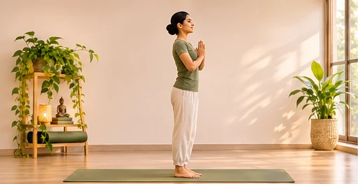
Stand with feet comfortably together or slightly apart. Bring palms together at the chest, soften the shoulders and distribute weight evenly. Take a moment to settle.
Om Mitraya Namaha · Friend of all
Muscle focus: Calves, quadriceps and trunk stabilizers. Light postural engagement.
Hasta Uttanasana — Raised arms
Inhale
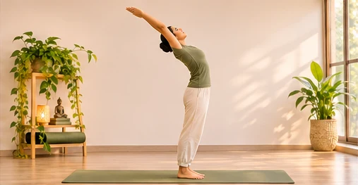
Raise both arms, lengthening through the sides of the body. Lift the chest gently rather than pushing the hips forward or compressing the lower back.
Om Ravaye Namaha · The shining one
Muscle focus: Shoulders and upper back. Gentle stretch through chest and abdominal wall.
Padahastasana — Standing forward bend
Exhale
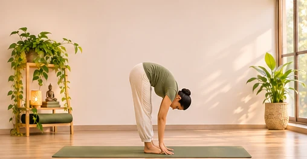
Hinge at the hips and fold forward. Bend the knees generously if needed; rest hands on blocks or the floor. Do not pull yourself deeper.
Om Suryaya Namaha · The sun
Muscle focus: Hamstrings and calves. Gentle lengthening; back muscles control the fold.
Ashwa Sanchalanasana — Equestrian pose
Inhale
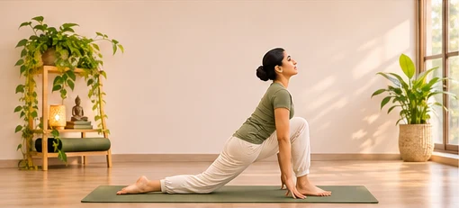
Step the right leg back, lower its knee and keep both hands on the floor beside the left foot. Lift the chest gently. Use blocks if reaching the floor is difficult.
Om Bhanave Namaha · The illuminator
Muscle focus: Front-leg quadriceps and gluteals. Rear hip flexors and front of thigh lengthen.
Dandasana — Plank
Exhale
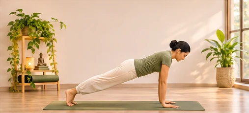
Step the left foot back. Keep shoulders over wrists and the trunk supported. Lower the knees if needed rather than allowing the lower back to sag.
Om Khagaya Namaha · One who moves through the sky
Muscle focus: Abdominals, shoulders, triceps and quadriceps. Gluteals help stabilize the trunk.
Ashtanga Namaskara — Eight-limbed salutation
Natural breath or brief comfortable pause
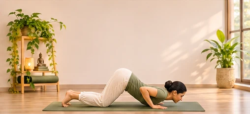
Lower knees, chest and chin gently, with hands and toes grounded. These form eight points of contact. If this transition strains the neck or shoulders, lower onto the belly instead.
Om Pushne Namaha · The nourisher
Muscle focus: Triceps, chest and shoulder stabilizers. Controlled lowering; avoid neck strain.
Bhujangasana — Cobra
Inhale
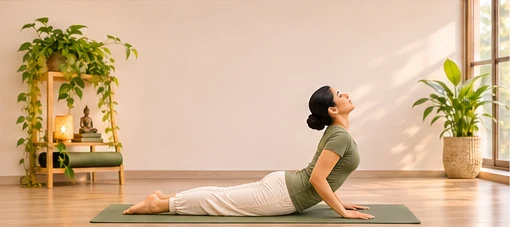
Slide forward and lower the pelvis. Lift the chest a little using the back muscles, keeping elbows bent and shoulders away from ears. Avoid forcing height.
Om Hiranyagarbhaya Namaha · The golden cosmic source
Muscle focus: Spinal extensors. Gentle stretch through the front of the trunk.
Parvatasana — Mountain pose
Exhale
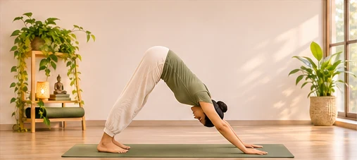
Lift the hips back and up into an inverted V. Keep knees bent if necessary and lengthen the spine. Heels need not reach the floor.
Om Marichaye Namaha · Lord of rays
Muscle focus: Shoulders, triceps and quadriceps. Hamstrings and calves lengthen.
Ashwa Sanchalanasana — Equestrian pose
Inhale
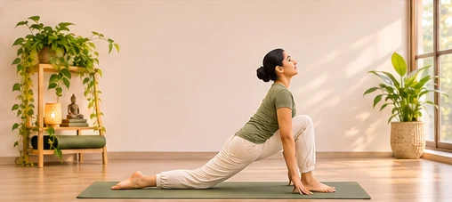
Bring the right foot forward between the hands and lower the left knee. Keep both hands on the floor or blocks. Help the foot forward with your hand if needed.
Om Adityaya Namaha · Son of Aditi
Muscle focus: Front-leg quadriceps and gluteals. Rear hip flexors and front of thigh lengthen.
Padahastasana — Standing forward bend
Exhale
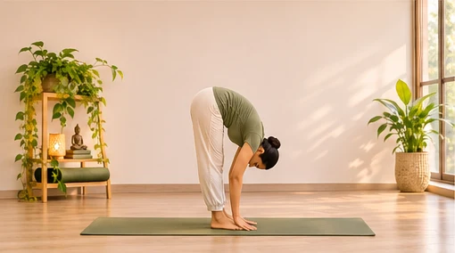
Step the rear foot forward and fold comfortably. Keep knees soft and avoid bouncing or pulling on the legs.
Om Savitre Namaha · The life-giving source
Muscle focus: Hamstrings and calves. Gentle lengthening with soft knees.
Hasta Uttanasana — Raised arms
Inhale
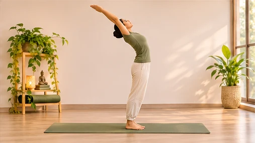
Rise steadily with a long spine and raise the arms. Keep the movement small if you feel unsteady.
Om Arkaya Namaha · The radiant one
Muscle focus: Shoulders and spinal extensors. Gentle stretch through chest and abdominal wall.
Pranamasana — Prayer pose
Exhale
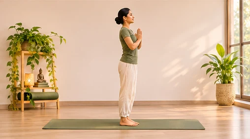
Return palms to the chest and stand quietly. Allow breathing to settle before repeating with the opposite leg leading.
Om Bhaskaraya Namaha · Giver of light
Muscle focus: Calves, quadriceps and trunk stabilizers. Light postural engagement.
From Ashwa Sanchalanasana to Anjaneyasana
In steps 4 and 9 the foundational equestrian pose keeps both hands on the floor or blocks. Anjaneyasana, with the torso upright and arms raised, is an optional intermediate variation, not a required step. First establish a stable lunge with the front knee tracking comfortably over the foot. If you can balance without strain, lift the torso and then the arms. Return hands to the floor before continuing. Skip this variation if it causes knee or back discomfort.
Build your practice gradually
Here, one round means two twelve-step sequences, alternating the leading leg. Start with one sequence if a full round feels tiring. Rest whenever breathing becomes strained. Progress only when you can move with control and recover comfortably.
Beginner
1–2 rounds, slowly, with blocks and knee support as needed.
Developing
2–4 rounds with steady breathing and pauses as needed.
Intermediate
4–6 rounds or more as tolerated; prioritize quality over speed.
When and how to practise
Morning is traditional, but another convenient time is fine. Avoid practising immediately after a large meal. Warm up wrists, shoulders and hips first. Finish with quiet rest. Do not force breath retention, deep backbends or rapid transitions. Seek individualized guidance if pregnant, recovering from surgery or managing cardiovascular, joint or spinal conditions. Stop for pain, dizziness or unusual breathlessness.
Do I need to chant the mantras?
No. They are an optional traditional element. A comfortable, attentive practice is more important than memorizing the words or completing a particular number of rounds.